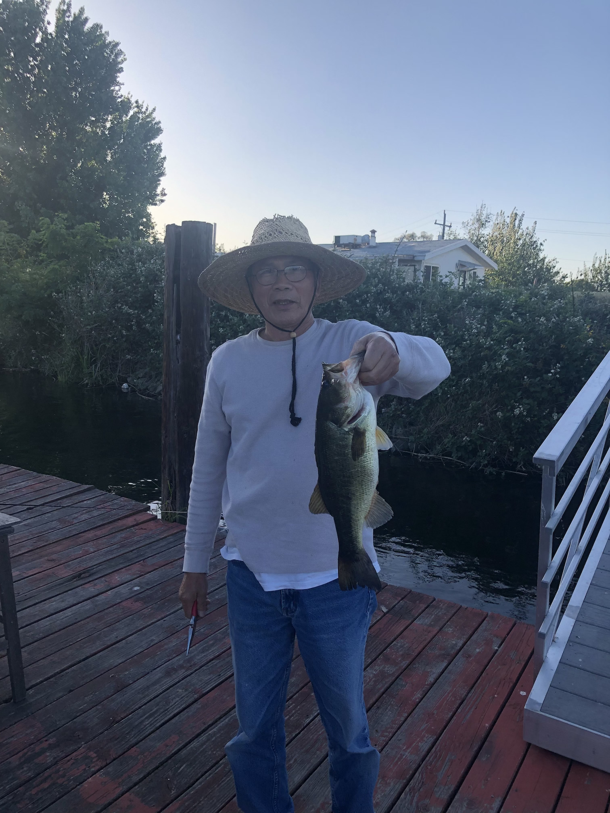
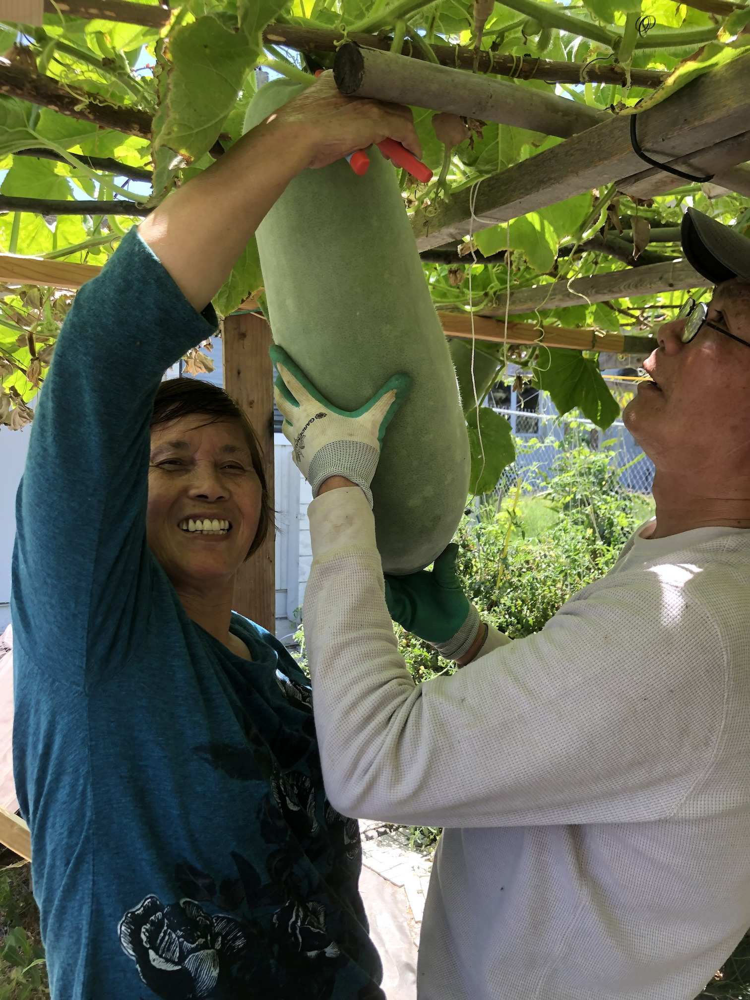
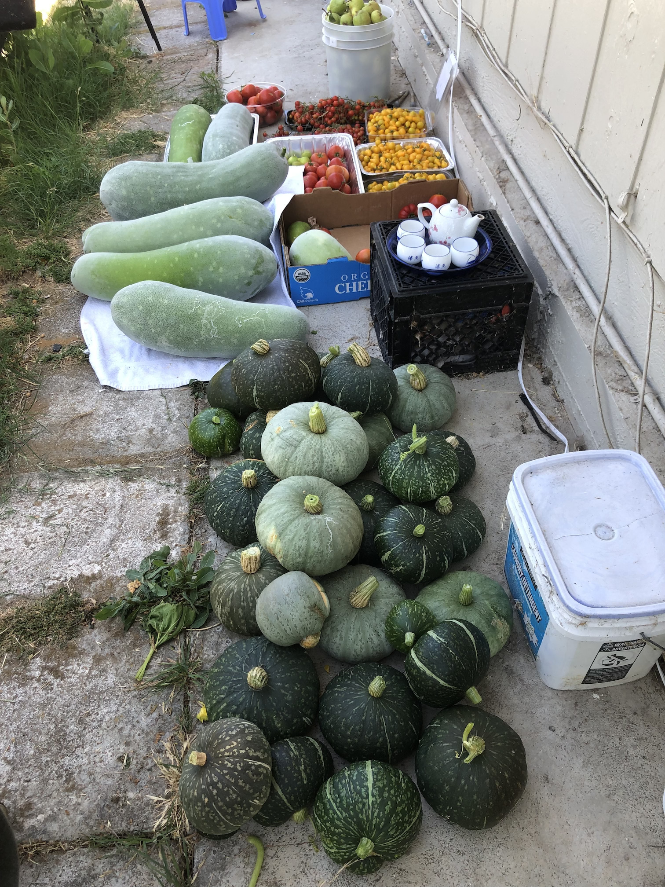

In my family, two of the closest relatives I have are my grandparents. They are a very important
part of my life, teaching and caring for me since I was born. These are some of my favorite
photos of them because these activities are some of their favorite hobbies. My grandpa likes
to go fishing, and he can sit for hours on the dock waiting for large fish to come by.
My grandma has always been skilled at farming and growing vegetables and flowers, and one of
the photos show a large winter melon being supported in a tiny hammock. She typically likes
to grow winter melons and once they grow big, she uses tiny hammocks to support them in the
air. She also grows cherry tomatoes, figs, pumpkins, dragonfruit, jalapenos, cucumbers, and
potatoes.


The other photo is usually what they harvest every couple of weeks during the summer when
the plants regrow. Once they die in the winter, my grandparents would start from scratch
and regrow everything as they did the previous years.